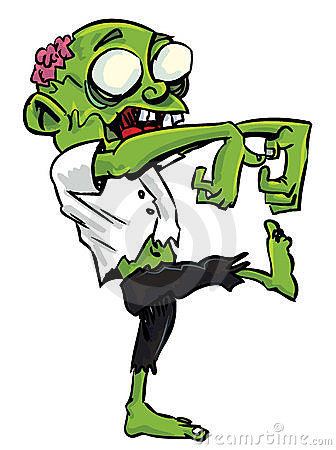
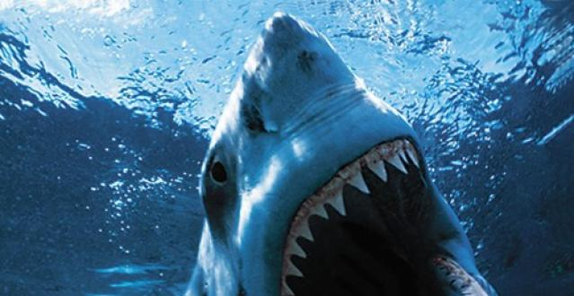
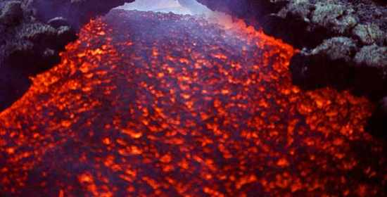
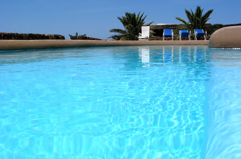
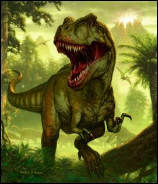

IL LABIRINTO MISTERIOSO
Due bambini (Luca e Caterina) nel giardino
trovarono una mappa di un labirinto misterioso.
Andarono dai genitori e chiesero torcie, cibo e acqua
e partirono alla ricerca del labirinto misterioso.
Camminarono per ore ma non lo trovarono a un certo punto capirono che il labirinto era sotteraneo.
Non sapevano come fare a scavare senza una pala.
Una volta dentro incontrarono un leone nero

Luca tirò fuori dallo zaino una bistecca e la tirò via, il leone attirato dall'odore la seguì e i bambini furono in salvo.
Dopo un' ora di cammino trovarono uno zombi

Caterina tirò fuori dallo zaino un peluche e lo zombie lo scambiò
per una persona vera .
Di notte tirarono fuori la torcia e videro una vasca con uno squalo

non sapevano come superarlo, perche si accorsero che ai fianchi c' era un percorso ma non sapevano se rischiare
perche di fianco c' era un vulcano incandesciente.

I bambini si ricordarono che i genitori gli diedero stivali antinfortunistici
e lo attraversarono senza problemi.
Dopo due ore di cammino si stesero su un materasso che trovarono nel cammino.
si riposarono un paio d' ore e poi ripresero il cammino.
Durante il tragitto trovarono una fessura nel terreno dove c' era un
tunnel nascosto.
Ad un certo punto caddero in un tunnel e scivolarono fino a quando caddero in una piscina che li risucchio.

Usciti dalla piscina che erano tutti bagnati si asciugarono.

Riscalarono il tunnel e saltarono il buco, ripresero il cammino
fino a quando non trovarono un prato fiorito
con molte uova abbastanza grandi.
Ne raccolsero una dozzina e sentirono un ruggito di dinosauro ma non lo sapevano molto bene.

Quando lo videro scapparono a gambe levate.
Quando non lo videro piu finirono di correre, quando fu notte si fermarono in una casa stregata abbandonata.
 Alla mattina del giorno dopo all' alba ripresero il viaggio per il labirinto misterioso
Alla mattina del giorno dopo all' alba ripresero il viaggio per il labirinto misterioso
dove alla fine c' é il tesoro piu bello dl mondo.
Nel terreno trovarono una x che vuol dire dove c'é il tesoro.
Scavarono un buco e trovarono il forziere.
 Nel forziere trovarono
Nel forziere trovarono
oro.
I bambini lo toccarono e persero i sensiper una dozzina di minuti.
Quando si risvegliarono si trovarono davanti a due vie
Luca andò nella prima la piu bella ma mostrosa e Caterina nella seconda piu brutta ma meno spaventosa.
Nella prima Luca era tranquillo ma terrorizzato e Caterina nella seconda era contenta ma era in una via terrorizzante.
 Dopo due ore di cammino uscirono e si trovarono davanti a casa.
I bambini abbracciarono i genitori e vissero feli ci e contenti.
Dopo due ore di cammino uscirono e si trovarono davanti a casa.
I bambini abbracciarono i genitori e vissero feli ci e contenti.